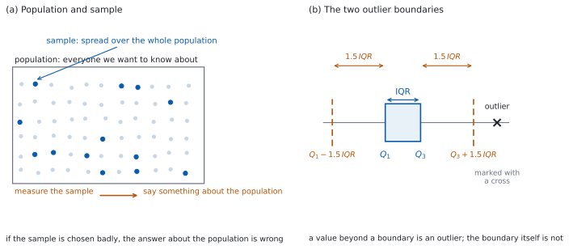

SL 4.1 — Sampling, bias and outliers（標本の取り方・かたより・外れ値）
- population（母集団）と sample（標本）を区別し、問題文からどちらかを言える。
- データが discrete（離散）か continuous（連続）かを判定できる。
- \(5\) つの sampling technique（標本の取り方）を名前で見分けられる。
- bias（かたより）が起きる理由を、英語で説明できる。
- outlier（外れ値）を \(1.5 \times \mathrm{IQR}\) の規則で判定し、残すか外すかを述べられる。
The idea
1. population と sample
population（母集団）は、知りたいことの全体です。sample（標本）は、そこから実際に調べた一部です。
町の \(4000\) 世帯で「\(1\) か月の電気の使用量」を知りたいなら、population は \(4000\) 世帯です。全部を調べるのは大変なので、\(50\) 世帯だけ調べます。この \(50\) 世帯が sample です。
sample から population を推測します（図 1 の (a)）。だから、sample が population をよく写しているかどうかが、いちばん大事になります。
シラバスは、Topic 4 の冒頭で次のように述べています。
At SL the data set will be considered to be the population unless otherwise stated.
つまり、問題文が何も言わなければ、与えられたデータの集まりそのものを population として扱います。 この約束は、標準偏差の記号を選ぶときに効いてきます（SL 4.3）。
2. discrete data と continuous data
- discrete data（離散データ）… 数えられるもの。生徒の人数、さいころの目、\(1\) 日の欠席者数。とびとびの値しかとりません。
- continuous data（連続データ）… 測るもの。時間、長さ、質量、温度。どんなに細かい値でもとりえます。
見分け方は「数えるのか、測るのか」です。「牛乳パックの中身の量」は測るので continuous、「\(1\) 日に売れたパックの数」は数えるので discrete です。
四捨五入された値にだまされないでください。 「中身は \(1000\) mL」と書いてあっても、もとの量は連続です。\(1000\) mL ちょうどしかありえない、という意味ではありません。
3. 標本の取り方 — \(5\) つ
シラバスが挙げているのは、次の \(5\) つです（表 1）。
| 名前 | やり方 | ひとことで |
|---|---|---|
| simple random | 全員に番号をつけ、乱数で選ぶ | 誰にも同じ確率 |
| convenience | 手近な人を選ぶ／自分から応じた人が入る | いちばん楽で、いちばん危ない |
| systematic | 名簿の \(k\) 人おきに選ぶ | 順番が規則的なら危ない |
| quota | 決めた人数がそろうまで選ぶ | 人数の内訳は合うが、選び方は無作為でない |
| stratified | 群に分け、群の大きさに比例した人数を各群から無作為に選ぶ | 内訳も選び方も合わせる |
stratified の計算だけは、数が出ます。 群の人数を \(N_i\)、population 全体を \(N\)、標本の大きさを \(n\) とすると、その群から取る人数は
\[ n \times \frac{N_i}{N} \tag{1}\]
です。この式は公式集にありません。 ただ、「全体と同じ割合にする」だけなので、覚えるというより意味で出せます。
4. どの取り方が効きめがあるか
simple random と stratified は、bias を小さくするしくみをもっています。 どちらも、選ばれる確率が人によって偏らないように決めてあるからです。ただし、\(1\) つの標本が population をよく表すとはかぎりません。 sampling variability（標本による偶然のばらつき） は残ります。
convenience と quota は、bias が入りやすい取り方です。 誰が標本に入るかが、たまたま手近にいたか、自分から応じたかで決まり、選ばれる確率が人によって大きく違うからです。それでも、たまたま population に近い標本になることはあります。 危ういのは、くり返したときに一方向へずれる傾向が残ることです。
systematic は、名簿の順番しだいです。 名簿がでたらめな順なら simple random に近くなります。名簿に周期があると、そこにはまって大きくかたよります。
5. bias — 結果がかたよるとき
bias（かたより）は、標本の取り方のせいで、答えが一方向にずれることです。
標本が population とずれるのは、偶然でも起こります。それは bias ではありません。
bias というのは、同じやり方をくり返したときに、平均として一方向へずれる傾向のことです。スーパーの入口で買い物客に「週に何回この店に来ますか」と聞けば、よく来る人ほど声をかけられやすいので、くり返すと平均として多めに出ます。
\(1\) 回ごとに見れば、逆向きにずれることもあります。 かたよった取り方でも、たまたま低めの標本になることはあります。bias は「毎回かならず同じ向き」ではなく、「くり返したときの平均の位置」の話です。
答案では、どの向きにずれるかまで書きます。 「biased です」だけでは、何が起きているのか伝わりません。「よく来る人ほど声をかけられやすいので、平均は多めに出る」まで書きます。
データそのものにも問題が起こります。欠測（記入されていない値）と記録ミスです。どちらも、気づかずに計算すると答えがずれます。
6. outlier の決め方
outlier（外れ値）は、「なんとなく遠い値」ではありません。シラバスは外れ値を「近いほうの四分位数から \(1.5 \times \mathrm{IQR}\) より遠いデータ」と決めています。ちょうど \(1.5 \times \mathrm{IQR}\) の値は入りません。
interquartile range（四分位範囲）は \(\mathrm{IQR} = Q_3 - Q_1\) です（SL 4.2）。
\(\mathrm{IQR} = Q_3 - Q_1\) は、公式集の 4.2 の欄にあります。試験中に配られるので、覚える必要はありません。
\(1.5 \times \mathrm{IQR}\) の規則のほうは、公式集にありません。 ここは覚えてください。
手順は \(3\) つです。
- \(Q_1\)、\(Q_3\)、\(\mathrm{IQR}\) を出す。小さい順に並べ、中央値を境に下半分と上半分に分けます。データの個数が奇数のときは、中央値そのものはどちらにも入れません。下半分の中央値が \(Q_1\)、上半分の中央値が \(Q_3\) で、\(\mathrm{IQR} = Q_3 - Q_1\) です。このページの例題と演習は、この方法で答えを出しています。
- 境目を \(2\) つ計算する。
\[ Q_1 - 1.5 \times \mathrm{IQR} \qquad \text{と} \qquad Q_3 + 1.5 \times \mathrm{IQR} \tag{2}\]
- 境目の外にある値が outlier です（図 1 の (b)）。境目そのものは outlier ではありません（「より遠い」なので）。
平均からの距離ではありません。 測るのは、近いほうの四分位数からの距離です。
7. 外れ値を残すか、外すか
シラバスは、両方ありうると言っています。外れ値には \(2\) 種類あります。
- 本物の値 … 実際にそういう人がいる。例：\(1\) 人だけ電車で \(2\) 時間かけて通う生徒。残します。
- 記録の誤り … 打ちまちがい、単位ちがい、機械の故障。例：身長が \(17\) cm。外して、外したことを書きます。
どちらかは、数字だけでは決められません。 場面を見て判断し、理由を書きます。答案では「外れ値です」で止めず、「残す」「外す」のどちらかを、理由をつけて書きます。\(1\) つの値が本物か誤りかは、その値の大きさではなく、その値がどうやって記録されたかで決まります。
ctrl + doc → Add Lists & Spreadsheet でデータを入れ、
menu → Statistics → Stat Calculations → One-Variable Statistics結果の Q1X と Q3X を読みます。n がデータの個数と合っているか、先に確かめてください。
手で出した四分位数と、電卓の値がちがうことがあります。 四分位数の求め方は \(1\) 通りではないからです（SL 4.3）。Paper 1 では手で出すので、このページの例題と演習は手で解ける数にしてあります。

Why it works
なぜ、四分位数から測るのでしょうか。 外れ値を探すのに、平均と標準偏差を使うと困ったことが起きます。探している外れ値そのものが、平均と標準偏差を動かしてしまうからです。大きな値が \(1\) つ混じると、平均はそちらに引かれ、標準偏差はふくらみます。すると「平均から \(2\) 標準偏差」の境目も外へ動いて、その値をつかまえられなくなります。
\(Q_1\) と \(Q_3\) は、並べたときの位置で決まります。例題 \(2\) の \(11\) 個のデータなら、いちばん大きい値が \(75\) でも \(7500\) でも、\(Q_1\) と \(Q_3\) は変わりません。
一般には、平均や標準偏差より、極端な値の影響を受けにくいという言い方になります。データの個数が少ないと、\(Q_1\) や \(Q_3\) が端の値そのものになることがあり、そのときは影響を受けます。
なぜ、\(1.5\) 倍なのでしょうか。 「めったにないが、ありえなくはない」ところに線を引くための、共通の判定基準だからです。
\(1.5\) でなければならない理由はありません。\(1.4\) でも \(1.6\) でも、同じような線が引けます。\(1.5\) は、そう決めてある約束です。 IB はこの規則で判定すると決めているので、答案でもこの規則を使ってください。
ここから先は、標準偏差と normal distribution（正規分布）を学んだあとで読んでください。
データが正規分布に従うとき、\(Q_1\) と \(Q_3\) は平均から \(0.6745\) 標準偏差のところにあり、\(\mathrm{IQR}\) は \(1.349\) 標準偏差になります。すると境目は
\[ 0.6745 + 1.5 \times 1.349 = 2.698 \]
標準偏差のところです。ここより外に出る確率は、両側あわせて約 \(0.7\%\) です。\(1000\) 個に \(7\) 個くらい、ということになります。
なぜ、無作為に選ぶ必要があるのでしょうか。 「選ばれる確率が人によって違う」と、その違いがそのまま答えに乗ります。店の入口で声をかければ、よく来る人ほど声をかけられやすくなります。この標本の来店回数の平均は、くり返すと population の平均より平均として多めに出ます。\(1\) 回ごとには低めに出ることもありますが、くり返したときの中心がずれています。標本を大きくしても直りません。\(1000\) 人に聞いても、入口で声をかけた \(1000\) 人なら同じです。
これが、bias と偶然のずれの決定的な違いです。偶然のずれは、標本を大きくすれば小さくなります。bias は、大きくしても小さくなりません。
Worked examples
問題文は英語です。意味が理解できなかったら、問題文の下の「日本語訳」を開いてください。解説は日本語です。
例題も演習も、すべて電卓なしで解けます。 Paper 1 のつもりで解いてください。
例題 1 A school has \(750\) students. The head of school wants to know how long students spend travelling to school. She stands at the main gate one morning and asks the first \(30\) students who arrive.
(a) State the population.
(b) State whether travel time is discrete or continuous.
(c) Name the sampling method used.
(d) Explain why this sample is likely to give a biased estimate of the mean travel time, and state what extra information would be needed to say in which direction the estimate is biased.
日本語訳
ある学校に \(750\) 人の生徒がいます。校長は、生徒が通学にどれくらい時間をかけているかを知りたいと考えています。彼女はある朝、正門に立って、最初に到着した \(30\) 人の生徒にたずねました。
(a) 母集団を述べなさい。
(b) 通学時間が離散データか連続データかを述べなさい。
(c) 使われた標本の取り方の名前を答えなさい。
(d) この標本では、平均通学時間の推定がかたよると考えられる理由を説明し、かたよりの向きを言うにはどんな情報が必要かを述べなさい。
(a) 知りたいのは「この学校の生徒の通学時間」なので、population は学校の \(750\) 人全員です（第 1 節）。
(b) 時間は測る量なので continuous です（第 2 節）。
(c) 手近な \(30\) 人を選んでいるので convenience sampling です（表 1）。乱数も名簿も使っていません。
(d) Explain why なので、英語で理由を書きます。選ばれ方のどこが偏っているかを書きます（第 5 節）。
向きは、この問題文だけでは決まりません。 「早く着く生徒＝近くに住む生徒」とはかぎらないからです。遠くの生徒が早い電車で来ることもあります。向きを言うには、到着の早さと通学時間の関係を示す情報が要ります。
試験ではこう書く
Only students who arrive early can be selected, and students who arrive later are never selected, so the sample is not representative of all \(750\) students. Arrival time depends on how a student travels and on what time they leave home, and these are related to travel time, so repeating the method would keep selecting the same kind of student and the sample mean would be systematically off. To say in which direction, we would need to know how arrival time is related to travel time for these students.
（早く着く生徒しか選ばれず、遅く着く生徒は選ばれないので、この標本は \(750\) 人全体を代表していない。到着の早さは通学の方法や家を出る時刻によって決まり、それらは通学時間と関係があるので、このやり方をくり返しても同じ種類の生徒が選ばれ、標本平均は系統的にずれる。どちらの向きにずれるかを言うには、到着の早さと通学時間の関係を知る必要がある、という意味です。）
検算（(d) について）。 反対の場合を考えてみます。 遠くに住む生徒が早い電車で来るなら、その生徒は最初の \(30\) 人に入り、通学時間は長いほうに出ます ✓ どちらの向きも起こりうるので、向きは断定できません。
検算（(b) について）。 数えるか測るかで見ます。 「通学時間 \(25\) 分」は測った値で、\(24.7\) 分もありえます ✓ discrete ではありません。
(a) all \(750\) students in the school
(b) continuous
(c) convenience sampling
(d) only early arrivals are sampled and late arrivals are never sampled, so the sample is not representative; the direction of the bias depends on how arrival time relates to travel time
例題 2 The times, in minutes, that \(11\) students spent on homework one evening were
\[ 12, \ 15, \ 18, \ 20, \ 22, \ 25, \ 27, \ 30, \ 33, \ 38, \ 75 \]
(a) Write down the median.
(b) Find \(Q_1\), \(Q_3\) and the interquartile range.
(c) Show that \(75\) is an outlier.
(d) Comment on whether the value \(75\) should be removed from the data.
日本語訳
ある晩、\(11\) 人の生徒が宿題に使った時間（分）は次のとおりでした。
\[ 12, \ 15, \ 18, \ 20, \ 22, \ 25, \ 27, \ 30, \ 33, \ 38, \ 75 \]
(a) 中央値を書きなさい。
(b) \(Q_1\)、\(Q_3\) および四分位範囲を求めなさい。
(c) \(75\) が外れ値であることを示しなさい。
(d) 値 \(75\) をデータから外すべきかどうかについて述べなさい。
データはすでに小さい順です。\(n = 11\) なので、中央値は \(6\) 番目です。
(a) \(6\) 番目は \(25\) です。
\[ \text{median} = 25 \]
(b) 中央値を除いて、下半分（\(5\) 個）と上半分（\(5\) 個）に分けます。それぞれの真ん中を取ります。
\[ Q_1 = 18 \ (\text{3 番目}), \qquad Q_3 = 33 \ (\text{9 番目}) \]
\[ \mathrm{IQR} = 33 - 18 = 15 \]
(c) Show that なので、境目を計算して比べます（第 6 節）。
\[ 1.5 \times \mathrm{IQR} = 1.5 \times 15 = 22.5 \]
\[ Q_3 + 22.5 = 33 + 22.5 = 55.5 \]
\(75 > 55.5\) なので、\(75\) は outlier です。
(d) Comment on なので、英語で述べます。
試験ではこう書く
A homework time of \(75\) minutes is a possible amount of time for a student to spend, so it is likely to be a genuine value rather than a recording error. It should therefore be kept in the data, and reported as an outlier. Removing it would throw away a real student, and would make the mean an underestimate of the true mean.
（宿題に \(75\) 分というのは生徒がかけうる時間なので、記録の誤りではなく本物の値である可能性が高い。したがってデータに残し、外れ値として報告するのがよい。外すと実在の生徒を捨てることになり、平均が本当の平均より小さく出てしまう、という意味です。）
検算（(b) について）。 個数で見ます。 \(Q_1\) より下に \(2\) 個（\(12\)、\(15\)）、\(Q_3\) より上に \(2\) 個（\(38\)、\(75\)）です ✓ \(11\) 個を \(4\) つに分けた形になっています。
検算（(c) について）。 下の境目も見ます。 \(Q_1 - 22.5 = 18 - 22.5 = -4.5\) です。いちばん小さい \(12\) は \(-4.5\) より大きいので、小さいほうに outlier はありません ✓
検算（(c) について、別の測り方）。 近いほうの四分位数からの距離で見ます。 \(75 - 33 = 42\) で、\(1.5 \times \mathrm{IQR} = 22.5\) より大きいです ✓ 境目と比べても、距離と比べても、同じ結論になります。
(a) \[\text{median} = 25\]
(b) \[Q_1 = 18, \quad Q_3 = 33, \quad \mathrm{IQR} = 33 - 18 = 15\]
(c) \(1.5 \times 15 = 22.5\) \[Q_3 + 22.5 = 55.5, \qquad 75 > 55.5\] so \(75\) is an outlier
(d) \(75\) minutes is a possible homework time, so it is probably genuine; keep it and report it as an outlier
例題 3 A school posts a survey on its website asking students how many hours they spend online each day. Any student may answer. After a week, \(120\) replies have been received.
(a) State the population.
(b) Name the sampling method.
(c) Explain why the mean number of hours found from this sample is likely to be too large.
(d) Suggest a sampling method that would reduce the bias, and describe how it would be carried out.
日本語訳
ある学校が、\(1\) 日に何時間インターネットを使うかをたずねる調査を、学校のウェブサイトに載せました。どの生徒も回答できます。\(1\) 週間後、\(120\) 件の回答が集まりました。
(a) 母集団を述べなさい。
(b) 標本の取り方の名前を答えなさい。
(c) この標本から求めた平均時間が大きくなりすぎると考えられる理由を説明しなさい。
(d) かたよりを小さくする標本の取り方を提案し、その進め方を述べなさい。
(a) population はその学校の全生徒です。回答した \(120\) 人ではありません。
(b) 自分から回答した人だけが集まっているので、convenience sampling です（表 1）。学校が選んだのではなく、生徒が自分で選んでいます。
(c) Explain why なので、英語で理由を書きます。向きが指定されているので、「大きくなる」理由をはっきり書きます。
試験ではこう書く
The survey is on a website, so only students who go online will see it, and those who spend the most time online are the most likely to find it and reply. Students who rarely use the internet are unlikely to be in the sample at all. The sample therefore over-represents heavy users, and the mean number of hours is too large.
（この調査はウェブサイト上にあるので、インターネットを使う生徒しか目にしない。しかも長時間使う生徒ほど、見つけて回答する可能性が高い。ほとんど使わない生徒は、そもそも標本に入りにくい。よって標本は長時間使う生徒に偏り、平均時間は大きくなりすぎる、という意味です。）
(d) Suggest と describe なので、方法の名前と、手順の両方を書きます。
試験ではこう書く
Take a simple random sample. Number every student in the school from \(1\) to \(N\) using the school roll, use technology to generate \(120\) different random numbers between \(1\) and \(N\), and ask exactly those students, following up the ones who do not reply. Every student then has the same chance of being chosen, whether or not they use the internet, so the sample no longer over-represents heavy users.
（simple random sample を取る。学校の名簿を使って全生徒に \(1\) から \(N\) まで番号をつけ、電卓などで \(1\) から \(N\) までの異なる乱数を \(120\) 個作り、その番号の生徒だけにたずねる。回答しなかった生徒には追加で連絡する。こうすればインターネットを使うかどうかに関係なく、どの生徒も同じ確率で選ばれるので、長時間使う生徒に偏らなくなる、という意味です。）
検算（(c) について）。 反対向きの標本を考えます。 もし紙のアンケートを全教室で配って回収したら、ほとんど使わない生徒も入ります。その平均はもっと小さくなるはずです ✓ ウェブの標本が大きめ、で合っています。
検算（(d) について）。 「無作為」だけで足りるか見ます。 番号をつけずに「適当に \(120\) 人選ぶ」では、選ぶ人のくせが入ります ✓ 名簿と乱数まで書く必要があります。
(a) all students in the school
(b) convenience sampling
(c) only students who use the internet see the survey, and heavy users are the most likely to reply, so the sample over-represents them and the mean is too large
(d) simple random sampling: number all students on the school roll, generate random numbers with technology, and ask exactly those students
例題 4 A school has \(750\) students: \(300\) in Grades 6–8, \(250\) in Grades 9–10 and \(200\) in Grades 11–12. A stratified sample of \(60\) students is to be taken.
(a) Find the number of students to be taken from each of the three groups.
(b) Find the percentage of the whole school that is sampled.
(c) State how the students within each group should be chosen.
(d) Explain why a stratified sample may give a better estimate of the mean travel time than a simple random sample of the same size.
日本語訳
ある学校には \(750\) 人の生徒がいます。内訳は Grade 6–8 が \(300\) 人、Grade 9–10 が \(250\) 人、Grade 11–12 が \(200\) 人です。\(60\) 人の層別標本を取ります。
(a) \(3\) つの群それぞれから取る生徒の人数を求めなさい。
(b) 学校全体のうち、標本に取られる割合を百分率で求めなさい。
(c) 各群の中で生徒をどのように選ぶべきかを述べなさい。
(d) 同じ大きさの単純無作為標本より、層別標本のほうが平均通学時間のよい推定を与えうる理由を説明しなさい。
(a) 各群から取る人数は、\(60 \times \dfrac{\text{群の人数}}{750}\) です（式 1）。
\[ 60 \times \frac{300}{750} = 24, \qquad 60 \times \frac{250}{750} = 20, \qquad 60 \times \frac{200}{750} = 16 \]
(b) 標本の割合は、全体でも各群でも同じです。
\[ \frac{60}{750} = \frac{2}{25} = 0.08 = 8\% \]
(c) 群の中では、simple random sampling で選びます。群に分けただけでは、選び方は決まりません。
(d) Explain why なので、英語で理由を書きます。
試験ではこう書く
Travel time is likely to differ between the three groups, for example because older students are allowed to travel further on their own. A simple random sample of \(60\) could by chance contain very few students from one group, and the estimate would then be pulled towards the other groups. Stratifying fixes the number taken from each group in proportion to its size, so every group is represented correctly.
（通学時間は \(3\) つの群のあいだで違う可能性が高い。たとえば年上の生徒ほど、一人で遠くから通うことを許されているかもしれない。\(60\) 人の単純無作為標本では、偶然どれかの群がごく少数しか入らないことがあり、そうなると推定は他の群のほうに引かれる。層別にすれば、各群から取る人数がその大きさに比例して固定されるので、どの群も正しく代表される、という意味です。）
検算（(a) について）。 足します。 \(24 + 20 + 16 = 60\) ✓ 標本の大きさと一致します。
検算（(a) について、割合）。 群ごとに割合を出します。 \(\dfrac{24}{300} = \dfrac{20}{250} = \dfrac{16}{200} = 0.08\) ✓ どの群も同じ \(8\%\) です。
検算（(a) について、誤りの側）。 等分してしまった場合と比べます。 \(3\) 群に \(20\) 人ずつだと、Grade 11–12 は \(\dfrac{20}{200} = 10\%\)、Grade 6–8 は \(\dfrac{20}{300} \approx 6.7\%\) です ✓ 割合がそろわないので、層別になっていません。
(a) \[60 \times \frac{300}{750} = 24, \quad 60 \times \frac{250}{750} = 20, \quad 60 \times \frac{200}{750} = 16\]
(b) \[\frac{60}{750} = 0.08 = 8\%\]
(c) by simple random sampling within each group
(d) travel time is likely to differ between the groups, and stratifying guarantees each group is represented in proportion to its size
Common errors
population は知りたい全体、sample は実際に調べた一部です（第 1 節）。「回答した \(120\) 人」は sample です。
測るのは、近いほうの四分位数からの距離です（第 6 節）。平均も標準偏差も使いません。
境目は \(Q_3 + 1.5 \times \mathrm{IQR}\) です（式 2）。\(\mathrm{IQR}\) のままだと、外れ値でない値まで拾ってしまいます。
記録の誤りなら外し、本物の値なら残します（第 7 節）。どちらかを、理由とともに書いてください。
どの向きにずれるかまで書きます（第 5 節）。大きめに出るのか、小さめに出るのかが答えの中心です。
群の大きさに比例させます（式 1）。等分すると、小さい群の生徒ほど選ばれやすくなります。
Exercises
各問題に、折りたたみが \(3\) つ付いています。日本語訳、解答例（答案用紙に書くべきこと。英語です）、解説（なぜそうなるか。日本語です）。
まず自分で解いて、次に解答例と見くらべてください。解説は、合わなかったときだけ開けば十分です。
1 A factory produces \(20\,000\) light bulbs each day. An inspector tests every \(200\)th bulb coming off the production line. State the population, state whether the lifetime of a bulb is discrete or continuous, and name the sampling method.
日本語訳
ある工場は \(1\) 日に \(20\,000\) 個の電球を製造します。検査員は、製造ラインから出てくる \(200\) 個目ごとの電球を検査します。母集団を述べ、電球の寿命が離散データか連続データかを述べ、標本の取り方の名前を答えなさい。
population: the \(20\,000\) bulbs produced that day
continuous
systematic sampling
2 An interviewer stops people in a shopping centre until she has interviewed \(25\) men and \(25\) women. Name the sampling method, and state whether every shopper had the same chance of being interviewed.
日本語訳
ある調査員が、ショッピングセンターで通行人に声をかけ、男性 \(25\) 人と女性 \(25\) 人にインタビューできるまで続けます。標本の取り方の名前を答え、すべての買い物客が同じ確率でインタビューされたかどうかを述べなさい。
quota sampling
no
決めた人数がそろうまで続けるので quota sampling です（表 1）。
検算。 stratified とのちがいで見ます。 どちらも「男 \(25\)・女 \(25\)」という内訳を作れますが、stratified は各群の中を無作為に選びます ✓ ここでは調査員が声をかける相手を選んでいるので、無作為ではありません。
「人数が半々だから公平」ではありません。 声をかけやすい人だけが選ばれています。
3 A list of \(600\) students is in alphabetical order. Every \(10\)th student on the list is chosen, starting from the \(4\)th. Name the sampling method, and write down how many students are chosen.
日本語訳
\(600\) 人の生徒の名簿がアルファベット順に並んでいます。\(4\) 番目から始めて、\(10\) 人おきに生徒を選びます。標本の取り方の名前を答え、選ばれる生徒の人数を書きなさい。
systematic sampling
\[600 \div 10 = 60\]
4 The masses, in kilograms, of \(9\) parcels are
\[ 5, \ 7, \ 8, \ 8, \ 9, \ 11, \ 12, \ 14, \ 30 \]
Find \(Q_1\), \(Q_3\) and the interquartile range, and determine whether \(30\) is an outlier.
日本語訳
\(9\) 個の小包の質量（kg）は次のとおりです。
\[ 5, \ 7, \ 8, \ 8, \ 9, \ 11, \ 12, \ 14, \ 30 \]
\(Q_1\)、\(Q_3\) および四分位範囲を求め、\(30\) が外れ値かどうかを判定しなさい。
\[Q_1 = 7.5, \quad Q_3 = 13, \quad \mathrm{IQR} = 5.5\]
\[1.5 \times 5.5 = 8.25\]
\[Q_3 + 8.25 = 21.25, \qquad 30 > 21.25\]
so \(30\) is an outlier
\(n = 9\) なので中央値は \(5\) 番目の \(9\) です。中央値を除いて下半分 \(5, 7, 8, 8\) と上半分 \(11, 12, 14, 30\) に分け、それぞれの真ん中を取ります（第 6 節の手順 \(1\)）。
\[ Q_1 = \frac{7 + 8}{2} = 7.5, \qquad Q_3 = \frac{12 + 14}{2} = 13 \]
検算。 下の境目も見ます。 \(Q_1 - 8.25 = 7.5 - 8.25 = -0.75\) で、いちばん小さい \(5\) はこれより大きいので、小さいほうに外れ値はありません ✓
中央値を下半分に入れないでください。 \(n\) が奇数のときは、中央値を除いてから分けます。
5 The numbers of books borrowed in a week by \(11\) students were
\[ 1, \ 14, \ 15, \ 16, \ 18, \ 19, \ 20, \ 22, \ 24, \ 25, \ 44 \]
Find all the outliers.
日本語訳
\(11\) 人の生徒が \(1\) 週間に借りた本の冊数は次のとおりでした。
\[ 1, \ 14, \ 15, \ 16, \ 18, \ 19, \ 20, \ 22, \ 24, \ 25, \ 44 \]
外れ値をすべて求めなさい。
\[Q_1 = 15, \quad Q_3 = 24, \quad \mathrm{IQR} = 9\]
\[1.5 \times 9 = 13.5\]
\[Q_1 - 13.5 = 1.5, \qquad Q_3 + 13.5 = 37.5\]
\[1 < 1.5 \quad \text{and} \quad 44 > 37.5\]
outliers: \(1\) and \(44\)
境目は \(2\) つあります（式 2）。上だけ見て終わりにしないでください。
\(n = 11\) なので中央値は \(6\) 番目の \(19\)、\(Q_1\) は \(3\) 番目の \(15\)、\(Q_3\) は \(9\) 番目の \(24\) です。
検算。 境目のすぐ内側を見ます。 \(14\) は \(1.5\) より大きく、\(25\) は \(37.5\) より小さいので、外れ値ではありません ✓ 外れ値は両はしの \(2\) 個だけです。
冊数は discrete です。 \(1.5\) 冊という値はありませんが、境目は小数のままでかまいません。比べるためだけに使います。
6 A sports club has \(1200\) members: \(480\) juniors, \(420\) seniors and \(300\) veterans. A sample of \(100\) members is taken by choosing \(40\) juniors, \(35\) seniors and \(25\) veterans, each group chosen at random. Name the sampling method, and show how the three numbers were obtained.
日本語訳
あるスポーツクラブには \(1200\) 人の会員がいます。内訳は junior が \(480\) 人、senior が \(420\) 人、veteran が \(300\) 人です。junior \(40\) 人、senior \(35\) 人、veteran \(25\) 人をそれぞれ無作為に選んで、\(100\) 人の標本を取りました。標本の取り方の名前を答え、\(3\) つの人数がどのように求められたかを示しなさい。
stratified sampling
\[100 \times \frac{480}{1200} = 40\]
\[100 \times \frac{420}{1200} = 35\]
\[100 \times \frac{300}{1200} = 25\]
群の大きさに比例した人数を、群の中から無作為に選んでいるので stratified です（表 1）。人数は \(n \times \dfrac{N_i}{N}\) で出ます（式 1）。\(\dfrac{100}{1200} = \dfrac{1}{12}\) なので、どの群も \(12\) で割ればよいことになります。
quota と見分けてください。 quota も「junior \(40\) 人」のように人数を決めますが、群の中の選び方が無作為ではありません（第 4 節）。
検算。 足します。 \(40 + 35 + 25 = 100\) ✓
検算（割合）。 \(\dfrac{40}{480} = \dfrac{35}{420} = \dfrac{25}{300} = \dfrac{1}{12}\) ✓ どの群も同じ割合です。
割り切れないときは四捨五入し、合計が \(n\) になるように調整します。 ここでは \(3\) つとも整数になります。
7 A student wants to estimate the mean number of hours per week that students at her school study. She asks the students sitting near her in the school library. Explain why her estimate is likely to be too large.
日本語訳
ある生徒が、自分の学校の生徒が \(1\) 週間に勉強する平均時間を推定しようとしています。彼女は、学校の図書館で自分の近くに座っている生徒にたずねました。彼女の推定が大きくなりすぎると考えられる理由を説明しなさい。
students in the library are those who study most, so the sample over-represents them and the mean is too large
Explain why なので、選ばれ方と、ずれる向きの両方を書きます（第 5 節）。これは convenience sampling です。
検算。 入らない生徒を考えます。 図書館に来ない生徒は、勉強時間が短い可能性が高く、標本に \(1\) 人も入りません ✓ 平均は大きめに出ます。
「標本が小さいから」ではありません。 人数を増やしても、図書館の生徒に聞くかぎり同じ向きにずれます。
試験ではこう書く
The sample is taken only from students who are in the library, and those students are the ones who choose to spend time studying. Students who study very little are not in the library at all, so they have almost no chance of being asked. The sample therefore over-represents students with long study times, and the sample mean is larger than the mean for the whole school.
8 In a survey of homework times, one student recorded \(0\) minutes. Comment on whether this value should be treated as an outlier and removed.
日本語訳
宿題の時間の調査で、\(1\) 人の生徒が \(0\) 分と記録しました。この値を外れ値として扱い、除くべきかどうかについて述べなさい。
first test it against \(Q_1 - 1.5 \times \mathrm{IQR}\); even if it is an outlier, \(0\) may mean the student genuinely did no homework, so it should be kept unless there is evidence that the entry is missing data
\(2\) つのことを分けて書きます（第 7 節）。外れ値かどうかは規則で決まり、残すかどうかは場面で決まります。
検算。 逆の場合を考えます。 もし調査票が「空欄なら \(0\) と入力する」しくみだったら、\(0\) は「宿題をしなかった」ではなく「答えなかった」を意味します ✓ そのときは外す理由になります。
「\(0\) だから外れ値」ではありません。 境目を計算しないと判定できません。
試験ではこう書く
Whether \(0\) is an outlier must be decided by comparing it with \(Q_1 - 1.5 \times \mathrm{IQR}\), not by the fact that it is the smallest value. Even if it is an outlier, a student may genuinely have done no homework that evening, so the value would be a valid part of the sample and should be kept. It should only be removed if there is evidence that \(0\) was recorded because the answer was missing.
9 For a set of data the mean is \(40\), the standard deviation is \(6\), \(Q_1 = 34\) and \(Q_3 = 46\). A student says that the value \(55\) is an outlier because it is more than \(2\) standard deviations above the mean. Identify the error, and determine whether \(55\) is an outlier.
日本語訳
あるデータの平均は \(40\)、標準偏差は \(6\)、\(Q_1 = 34\)、\(Q_3 = 46\) です。ある生徒が、値 \(55\) は平均より \(2\) 標準偏差以上大きいので外れ値だ、と言いました。誤りを指摘し、\(55\) が外れ値かどうかを判定しなさい。
the outlier rule uses the quartiles, not the mean and standard deviation
\[\mathrm{IQR} = 46 - 34 = 12, \qquad 1.5 \times 12 = 18\]
\[Q_3 + 18 = 64, \qquad 55 < 64\]
so \(55\) is not an outlier
Identify the error なので、どこが違うのかを名指しします（第 6 節）。使う物差しがちがいます。
検算。 生徒の言い分も計算します。 \(40 + 2 \times 6 = 52\) で、たしかに \(55 > 52\) です ✓ 計算は合っていますが、規則が違います。
検算（規則）。 近いほうの四分位数からの距離で見ます。 \(55\) に近いのは \(Q_3 = 46\) で、\(55 - 46 = 9\) です。\(1.5 \times \mathrm{IQR} = 18\) より小さいので、外れ値ではありません ✓ 境目と比べたときと同じ結論です。
試験ではこう書く
The definition of an outlier uses the quartiles, not the mean and the standard deviation: a value is an outlier if it is more than \(1.5 \times \mathrm{IQR}\) from the nearest quartile. Here \(\mathrm{IQR} = 46 - 34 = 12\), so the upper boundary is \(46 + 1.5 \times 12 = 64\). Since \(55 < 64\), the value \(55\) is not an outlier.
10 A school has \(600\) students in \(24\) classes of \(25\). A list is made by writing out each class in turn, with the students of each class in order of their last test score, highest first. Every \(25\)th student on the list is chosen, starting from the \(1\)st. Explain why this sample is biased.
日本語訳
ある学校には、\(25\) 人ずつ \(24\) クラス、合計 \(600\) 人の生徒がいます。名簿は、クラスごとに順に書き出し、各クラス内は前回のテストの点数が高い順に並べて作られています。\(1\) 番目から始めて、\(25\) 人おきに生徒を選びます。この標本がかたよっている理由を説明しなさい。
the list has a period of \(25\) and the step is also \(25\), so the student chosen is always the first in a class, that is the highest scorer; the sample consists only of top students
systematic sampling が危ないのは、名簿に周期があるときです（第 4 節）。ここでは周期も歩幅も \(25\) で、ぴったり重なっています。
\(1\) 番目、\(26\) 番目、\(51\) 番目、… と進みますが、\(26\) 番目は \(2\) クラス目の \(1\) 人目、\(51\) 番目は \(3\) クラス目の \(1\) 人目です。
検算。 人数で見ます。 \(600 \div 25 = 24\) 人が選ばれ、クラス数と同じです ✓ 各クラスからちょうど \(1\) 人、しかも同じ位置の \(1\) 人です。
検算（歩幅を変えます）。 \(25\) ではなく \(24\) 人おきにすると、\(1, 25, 49, \ldots\) となり、クラス内の位置は \(1\) 番目、\(25\) 番目、\(24\) 番目、\(23\) 番目、… と \(1\) つずつずれていきます ✓ 周期と歩幅が一致していることが原因だと分かります。
試験ではこう書く
The list repeats with a period of \(25\), because each class contributes exactly \(25\) students, and the sampling step is also \(25\). Starting at the \(1\)st student therefore selects the \(1\)st student of every class, and within each class the students are ordered by test score with the highest first. The sample consists only of the top student in each class, so it over-represents high scorers and is biased upwards.